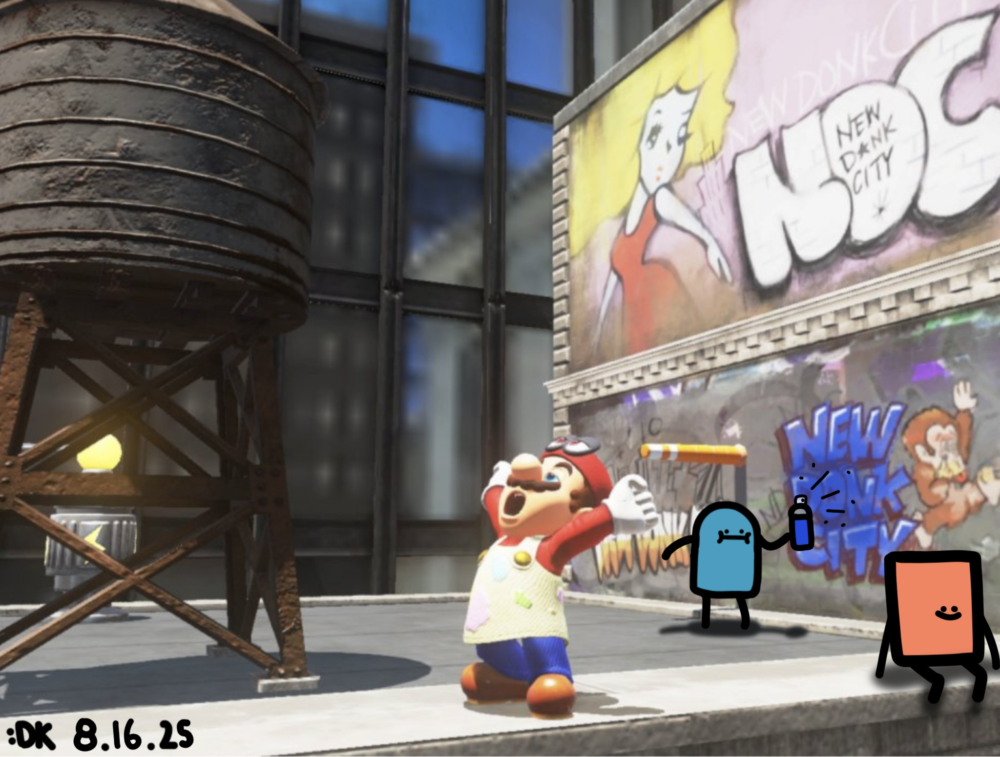
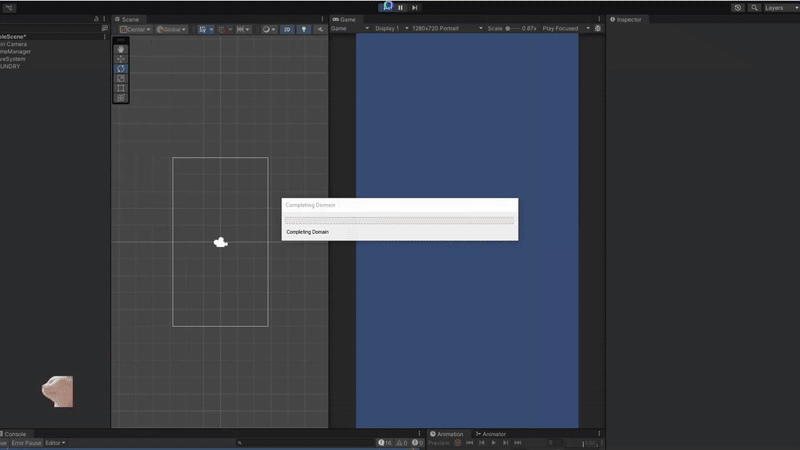
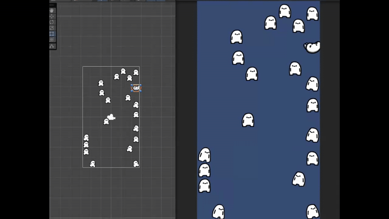

This is my first post for the blog. The main purpose of these posts is to track my progress and keep myself accountable for finishing projects. I might sprinkle in some personal updates, but the focus will be on development progress. This entry will be a little longer than usual because I’ll also introduce the app I’m currently working on: glhf-grow.
The core idea behind glhf-grow is to help people stay focused and minimize distractions from their phones. When you open the app, a character spawns, and it doubles as a journal entry. You can rename the character and use a text field to write about anything you want.
One technical challenge I’m already thinking about is handling large text storage because Unity’s default input field caps entries at 512 characters. That’s something I’ll need to solve later on.
This week I tackled some larger features:
- Added a gacha system, allowing characters to spawn with tier-based probabilities
- Implemented save persistence, so characters remain between sessions
- Added a delete function for proper data management
- Introduced tier-based special animations
I’m considering a shift in the app’s design. Instead of a purely distraction-free app, users could “roll” for a new character once every 24 hours. They’d take a photo to generate a daily journal entry, then add text to it.
The challenges this introduces include:
- Implementing a reliable 24-hour cooldown system
- Setting up cloud storage
- Detecting photo captures in Unity
It’s ambitious, but I’m excited about the potential. By the end of this project, I hope to have a fully functional app while gaining significant development experience. I also plan to eventually incorporate the original “grow” system as a future feature. Interestingly, this work aligns closely with what I envisioned for my glhf-capsule game, which could serve as the foundation for version 1.

This week focused on building the foundation for the app:
Basic Save System: Implemented a save system for each character. I missed this feature in a previous project, so I prioritized it early this time.
Character Features: Added random names and started planning shiny variants with visual effects like trails.
Basic Character Behavior: Built a simple roaming character and added basic animations.
Next steps include creating a more advanced spawn system for different character tiers and starting the menu system, which will eventually include a calendar feature.
